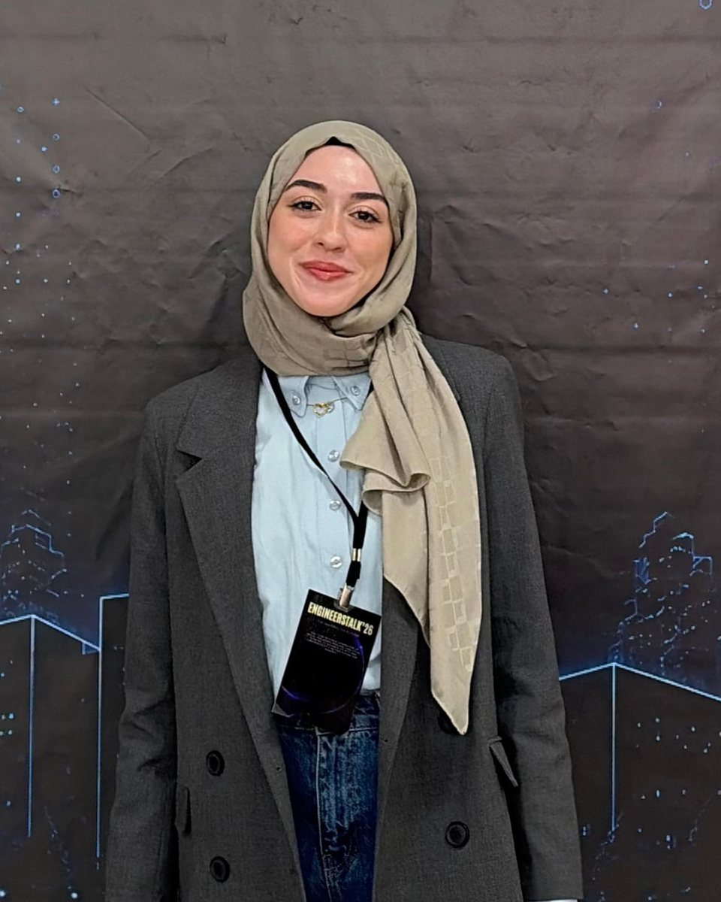

Merhaba, ben
Ayşe Nur Kendirci
Yazılım Mühendisliği Öğrencisi | Backend Geliştirici
REST API'ler, backend servisleri ve iOS uygulamaları tasarlayıp geliştiriyorum. Sadece kod yazmakla kalmıyor, her yeni günde mühendislik becerilerimi bir adım öteye taşımak için aralıksız çalışıyorum. Odak noktam her zaman temiz kod, sürdürülebilir mimari ve gerçek dünya problemlerine yenilikçi çözümler üretmek.
Hakkımda
Doğuş Üniversitesi'nde Yazılım Mühendisliği okuyorum ve 2027'de mezun olacağım. Full-stack geliştirme yapıyorum, ağırlığım ise backend tarafında; ilk yıldan beri öğrendiklerimi stajlarda ve gerçek projelerde uygulamaya çalışıyorum.
VakıfBank'taki backend stajımda FinGen'i kendi fikrim olarak başlattım: .NET 8 Web API, Angular ve Oracle PL/SQL ile hesap, kart ve para transferi akışlarını içeren bir bankacılık prototipi. İncehesap.com & Oksid Bilişim'de uzun süredir kullanılan bir depo yönetim sisteminin backend'ine katkı verdim ve bir eğitim platformu için puanlama ve lig sistemi geliştirdim.
Daha önce Swift ile iOS uygulamaları geliştirdim, bu yüzden bir API yazarken onu kullanacak ekranı da düşünüyorum. GDG On Campus Doğuş'ta mobil ekibin teknik liderliğini yaptım. Şu anda backend ağırlıklı, full-stack bir rolde uzun dönemli staj fırsatı arıyorum.
Junior pozisyon ve uzun dönem staja açık
- Eğitim
- Doğuş Üniversitesi Yazılım Mühendisliği Lisans, 2023 – 2027 (beklenen)
- Konum
- Maltepe, İstanbul Türkiye
- Diller
- Türkçe — ana dil İngilizce — orta üstü (B2) Almanca — başlangıç (A2)
Teknolojiler
Backend
- C#
- .NET / ASP.NET Core
- Entity Framework Core
- Dapper
- REST APIs
- JWT
Veritabanı ve Yaklaşımlar
- SQL Server
- Oracle (PL/SQL)
- Clean Architecture
- Repository Pattern
- Git / GitHub
- Agile / Scrum
Diğer Teknolojiler
- Angular
- JavaScript
- PHP / Laravel
- Java
- Swift / SwiftUI
- Firebase
Deneyim
-
Full-Stack Geliştirici Stajyeri
Köklü bir depo yönetim sistemi ve Laravel tabanlı öğrenme yönetim sistemi İnox Akademi üzerinde çalıştım.
- Depo yönetim sisteminin C#/.NET backend servislerinin ve API entegrasyonlarının yeniden yapılandırılmasına katkı sağladım.
- İnox Akademi için puanlama ve lig tabanlı oyunlaştırma özellikleri geliştirdim.
- İK prim hesaplamalarını desteklemek amacıyla süre ağırlıklı bir çalışan eğitim puanlama modelini bağımsız olarak tasarladım.
-
Backend Geliştirici Stajyeri
Kendi girişimimle, gençlere yönelik bir bankacılık uygulaması prototipi olan FinGen’i full-stack staj projesi olarak geliştirdim.
- Kimlik doğrulama, hesaplar, kartlar ve para transferi için RESTful .NET 8 Web API endpoint’leri ve Angular ekranları geliştirdim.
- Oracle veritabanı katmanını Dapper ile erişilen PL/SQL stored procedure ve package’larla tasarladım; transfer işlemlerinde transaction yönetimi uyguladım.
- API’yi JWT kimlik doğrulama ile güvence altına aldım; çözümü Clean Architecture ve Repository Pattern ile yapılandırdım.
- Gerçek bankacılık süreçlerini yakından tanımak için çağrı merkezi ve core bankacılık ekiplerinin çalışmalarını gözlemledim.
-
Mobil Uygulama Geliştirici Stajyeri (iOS)
Swift, UIKit/SwiftUI ve MVVM kullanarak PettiCare ve CineScope adlı iki iOS uygulaması geliştirdim.
- PettiCare’in rutin takibi, hatırlatıcılar, profil yönetimi ve MapKit ile CoreLocation kullanan konum tabanlı veteriner arama özelliklerini geliştirdim.
- Yerel veri saklama için SwiftData kullandım.
- Agile/Scrum süreçleri içinde tekrar kullanılabilir arayüz bileşenleri ve Section/Row tabanlı ekran akışları oluşturdum.
-
Mobil Takım Lideri
Ekim 2025’te çekirdek ekibe katıldım, ardından teknik lider olarak mobil ekibi yönettim.
- Kulüp uygulamasının mobil mimarisini kurdum.
- Kurduğum bağlantılar aracılığıyla kulüp üyelerine konuşmacılık fırsatları sağladım.
- Yıl sonunda düzenlenen GDG Talk etkinliğinin koordinasyonunu üstlendim.
Projeler
FinGen
VakıfBank StajıBankacılık Uygulaması Prototipi
Gençlere yönelik, kimlik doğrulama, hesap, kart ve para transferi işlemlerini kapsayan, kendi girişimimle geliştirdiğim bir bankacılık prototipi. .NET 8 Web API, Angular ve Dapper ile erişilen Oracle PL/SQL katmanıyla geliştirildi; JWT ile güvence altına alındı ve Clean Architecture ile yapılandırıldı.
EcoGrab
Ekip ProjesiFazla Gıda Pazaryeri
Restoran ve kafelerin fazla gıdalarını indirimli satarak israfı azaltmasına yardımcı olan bir pazaryeri. Katmanlı ASP.NET Core backend’inde JWT kimlik doğrulama, müşteri ve satıcılar için rol tabanlı yetkilendirme ile sipariş, rezervasyon ve stok akışlarını içeren REST API’ler geliştirdim; Flutter uygulamasının entegrasyonunu yaptım.
CineScope
Kişisel ProjeYapay Zekâ Destekli Film Keşfi
Kullanıcının ruh hâlini veya zevkini kişiselleştirilmiş film önerilerine dönüştüren bir iOS uygulaması. MVVM mimarisini ve modüler Moya/Alamofire ağ katmanını tasarladım; TMDB API üzerinde OpenAI Function Calling ile öneri sohbetini geliştirdim ve Firebase Auth, Firestore ile Remote Config entegrasyonlarını yaptım.
HeyDOU Campus
Ekip ProjesiKampüs Yönetim Platformu
Akademik takvim, yemekhane, etkinlik ve kulüpler, staj ilanları ve kampüs haritasını tek bir platformda birleştiren web uygulaması. ASP.NET Core MVC modüllerini SQL Server ile uçtan uca geliştirdim ve OpenAI destekli özelliklere katkı sağladım.
PettiCare
VakıfBank StajıEvcil Hayvan Bakım Uygulaması
Evcil hayvan profillerini ve bakım rutinlerini yönetmeye yarayan; hatırlatıcılar ve konum tabanlı veteriner arama içeren bir iOS uygulaması. SwiftUI ve MVVM ile geliştirildi; harita için MapKit ve CoreLocation, yerel veri için SwiftData kullanıldı.
Sertifikalar
- Uygulamalarla SQL Öğreniyorum BTK Akademi
- C# Projects: Learning by Building Applications Udemy
- DenizAşırı Online Staj Programı DenizBank
- GitHub Kariyer Atölyesi Techcareer.net
- iOS Bootcamp Kasım Adalan
- SwiftUI Bootcamp Techcareer.net
İletişim
Junior pozisyonlar, uzun dönem staj fırsatları ve proje fikirleri için benimle iletişime geçebilirsiniz. Full-stack çalışıyorum, ağırlığım backend'de.